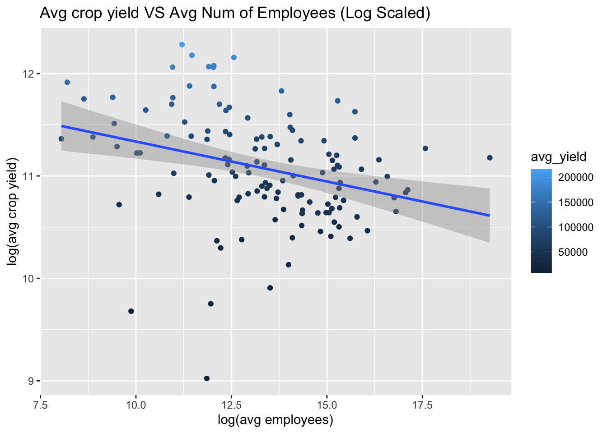
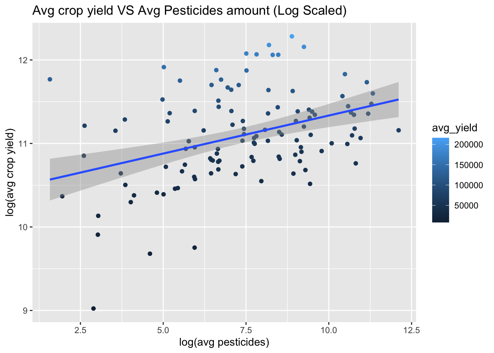
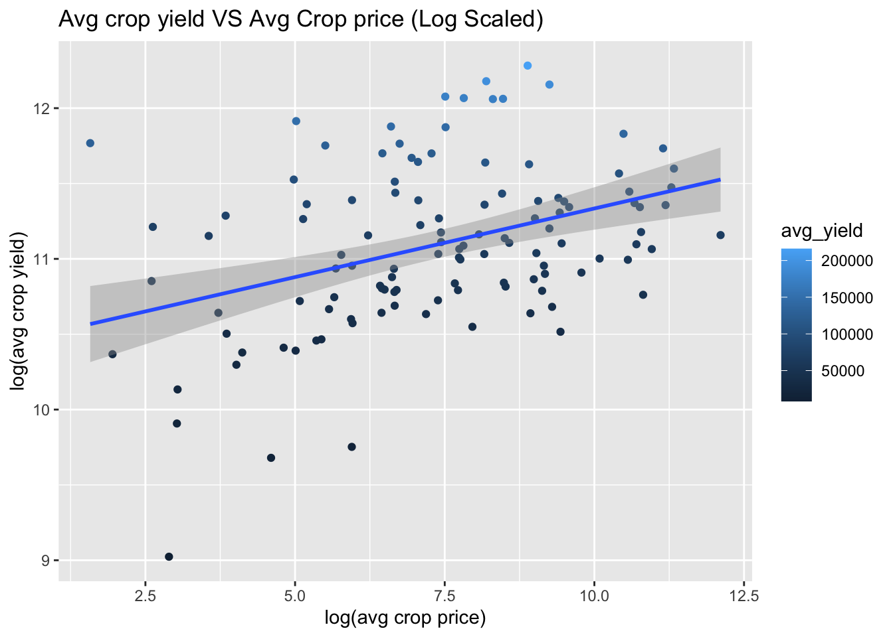

# Employees data
employees <- read.csv("https://raw.githubusercontent.com/erezlid/ADS_Final_Project/main/Data/Agriculture%20Employees%20/employ.csv")
# Climate change data
rainfall <- read.csv("https://raw.githubusercontent.com/erezlid/ADS_Final_Project/main/Data/Climate%20Change/rainfall.csv")
temp <- read.csv("https://raw.githubusercontent.com/erezlid/ADS_Final_Project/main/Data/Climate%20Change/temp.csv")
# Pesticides data
pesticides <- read.csv("https://raw.githubusercontent.com/erezlid/ADS_Final_Project/main/Data/Climate%20Change/pesticides.csv")
# Land Use data
land_use <- read.csv("https://raw.githubusercontent.com/erezlid/ADS_Final_Project/main/Data/Land%20Use%20/fao_data_land_data.csv")
# Population data
pop <- read.csv("https://raw.githubusercontent.com/erezlid/ADS_Final_Project/main/Data/Population/population_by_country.csv")
# Producer price data
price <- read.csv("https://raw.githubusercontent.com/erezlid/ADS_Final_Project/main/Data/Producer%20Price/Producer_Prices.csv")
# Agriculture yield data
yield <- read.csv("https://raw.githubusercontent.com/erezlid/ADS_Final_Project/main/Data/Yield/yield.csv")ADS Final Project
Loading data
# First 6 rows of each table
head(employees) Entity Year number_employed_agri
1 Afghanistan 1991 2092348
2 Afghanistan 1992 2296014
3 Afghanistan 1993 2542180
4 Afghanistan 1994 2750005
5 Afghanistan 1995 2918585
6 Afghanistan 1996 3037002head(land_use) country_or_area element_code element year unit value value_footnotes
1 Afghanistan 11 Area 2007 1000 Ha 38661 Q
2 Afghanistan 11 Area 2006 1000 Ha 38659 Fm
3 Afghanistan 11 Area 2005 1000 Ha 38515 Fm
4 Afghanistan 11 Area 2004 1000 Ha 38064 Fm
5 Afghanistan 11 Area 2003 1000 Ha 38899 Fm
6 Afghanistan 11 Area 2002 1000 Ha 37514 Fm
category
1 agricultural_area
2 agricultural_area
3 agricultural_area
4 agricultural_area
5 agricultural_area
6 agricultural_areahead(pesticides) Domain Area Element Item Year
1 Pesticides Use Albania Use Pesticides (total) 1990
2 Pesticides Use Albania Use Pesticides (total) 1991
3 Pesticides Use Albania Use Pesticides (total) 1992
4 Pesticides Use Albania Use Pesticides (total) 1993
5 Pesticides Use Albania Use Pesticides (total) 1994
6 Pesticides Use Albania Use Pesticides (total) 1995
Unit Value
1 tonnes of active ingredients 121
2 tonnes of active ingredients 121
3 tonnes of active ingredients 121
4 tonnes of active ingredients 121
5 tonnes of active ingredients 201
6 tonnes of active ingredients 251head(pop) country_code country_name year value
1 ABW Aruba 1960 54608
2 ABW Aruba 1961 55811
3 ABW Aruba 1962 56682
4 ABW Aruba 1963 57475
5 ABW Aruba 1964 58178
6 ABW Aruba 1965 58782head(price) Domain.Code Domain Area.Code..M49. Area Element.Code
1 PP Producer Prices 8 Albania 5532
2 PP Producer Prices 8 Albania 5532
3 PP Producer Prices 8 Albania 5532
4 PP Producer Prices 8 Albania 5532
5 PP Producer Prices 8 Albania 5532
6 PP Producer Prices 8 Albania 5532
Element Item.Code..CPC. Item Year.Code Year
1 Producer Price (USD/tonne) 112 Maize (corn) 1993 1993
2 Producer Price (USD/tonne) 112 Maize (corn) 1994 1994
3 Producer Price (USD/tonne) 112 Maize (corn) 1995 1995
4 Producer Price (USD/tonne) 112 Maize (corn) 1996 1996
5 Producer Price (USD/tonne) 112 Maize (corn) 1997 1997
6 Producer Price (USD/tonne) 112 Maize (corn) 1998 1998
Months.Code Months Unit Value Flag Flag.Description
1 7021 Annual value USD 243.2 A Official figure
2 7021 Annual value USD 209.3 A Official figure
3 7021 Annual value USD 183.4 A Official figure
4 7021 Annual value USD 248.8 A Official figure
5 7021 Annual value USD 235.0 A Official figure
6 7021 Annual value USD 245.6 A Official figurehead(rainfall) Area Year average_rain_fall_mm_per_year
1 Afghanistan 1985 327
2 Afghanistan 1986 327
3 Afghanistan 1987 327
4 Afghanistan 1989 327
5 Afghanistan 1990 327
6 Afghanistan 1991 327head(temp) year country avg_temp
1 1849 Côte D'Ivoire 25.58
2 1850 Côte D'Ivoire 25.52
3 1851 Côte D'Ivoire 25.67
4 1852 Côte D'Ivoire NA
5 1853 Côte D'Ivoire NA
6 1854 Côte D'Ivoire NAhead(yield) Domain.Code Domain Area.Code Area Element.Code Element Item.Code Item
1 QC Crops 2 Afghanistan 5419 Yield 56 Maize
2 QC Crops 2 Afghanistan 5419 Yield 56 Maize
3 QC Crops 2 Afghanistan 5419 Yield 56 Maize
4 QC Crops 2 Afghanistan 5419 Yield 56 Maize
5 QC Crops 2 Afghanistan 5419 Yield 56 Maize
6 QC Crops 2 Afghanistan 5419 Yield 56 Maize
Year.Code Year Unit Value
1 1961 1961 hg/ha 14000
2 1962 1962 hg/ha 14000
3 1963 1963 hg/ha 14260
4 1964 1964 hg/ha 14257
5 1965 1965 hg/ha 14400
6 1966 1966 hg/ha 14400Some of the tables have unnecessary columns, deleting those columns is a crucial before starting asking questions about the data
Data Cleaning & Arranging
# Country & Year columns uniformity
colnames(employees)[1] <- "Country"
colnames(land_use)[c(1,4,6)] <- c("Country","Year","land_price")
colnames(pesticides)[c(2,7)] <- c("Country", "pesticides_amount")
colnames(pop)[c(2,3,4)] <- c("Country","Year","pop_amount")
colnames(price)[c(4,14)] <- c("Country","crop_price")
colnames(rainfall)[c(1,3)] <- c("Country","avg_rainfall")
colnames(temp)[1:2] <- c("Year","Country")
colnames(yield)[c(4,12)] <- c("Country",'yield')
# Remove unnecessary columns and arrange each table by Country & Year
employees <- employees |>
arrange(Country, Year)
# Remove plus sign from country name
land_use$Country <- sapply(land_use$Country, function(x) gsub(' \\+', '', x))
land_use <- land_use |>
select(-c(unit, element, element_code, value_footnotes)) |>
filter(category %in% c("agricultural_area")) |>
select(-category) |>
arrange(Country, Year)
pesticides <- pesticides |>
select(-c(Unit,Element, Domain,Item)) |>
arrange(Country, Year)
pop <- pop |>
select(-country_code) |>
arrange(Country, Year)
# Change Maize(corn) to Maize only
price$Item <- sapply(price$Item, function(x) gsub('corn', '', x)) %>%
sapply(., function(x) gsub('\\()', '', x))
price <- price |>
select(-c(Domain.Code,Domain,Area.Code..M49.,Element.Code,Element,
Item.Code..CPC.,Year.Code,Months.Code,Unit,Flag, Flag.Description, Months)) |>
arrange(Country, Year,Item) |>
select(-Item)
rainfall <- rainfall |>
arrange(Country, Year)
temp <- temp |>
arrange(Country, Year)
yield <- yield |>
select(-c(Domain, Domain.Code,Area.Code,Element.Code,
Element,Item.Code,Year.Code,Unit)) |>
arrange(Country, Year,Item)After deleting unnecessary columns, changing column names, filtering the relevant countries and sorting the tables. It’s time to join all of the tables into one big table.
# Join tables
joined_tables <- yield %>%
left_join(land_use,by=c("Year","Country"), relationship = "many-to-many") |>
left_join(pesticides,by=c("Year","Country"), relationship = "many-to-many") |>
left_join(pop,by=c("Year","Country"), relationship = "many-to-many") |>
left_join(rainfall,by=c("Year","Country"), relationship = "many-to-many") |>
left_join(temp,by=c("Year","Country"), relationship = "many-to-many") |>
left_join(employees,by=c("Year","Country"), relationship = "many-to-many") |>
left_join(price, by=c("Year","Country"), relationship='many-to-many') |>
arrange(Country, Year)
# Reordering columns
joined_tables <- joined_tables |> select(Year, Country, pop_amount,number_employed_agri,avg_temp, avg_rainfall,land_price,Item, pesticides_amount, crop_price,yield)# Removing countries that have more than 80% missing values
joined_tables <- joined_tables |>
group_by(Country) |>
mutate(missing_values_crop = sum(is.na(crop_price)),
missing_values_employee = sum(is.na(number_employed_agri)),
observations=n()) |>
ungroup() |>
filter(!((missing_values_crop/observations > 0.8) | (missing_values_employee/observations > 0.8))) |>
select(-c(missing_values_crop,missing_values_employee, observations))Our goal is to use mean based analysis in order to find which of the indices affect the most on crop yield outcome. Therefore, we used mean imputation to fill the missing values in each column. However, we still saved our data frame before the imputation.
filled_with_avg <- joined_tables |>
group_by(Country) |>
# Replace missing values with the column avg by country.
mutate_at(vars(-group_cols(), -avg_rainfall),~ ifelse(is.na(.), mean(., na.rm=T),.)) |>
# Fill avg_rainfall backwards
fill(avg_rainfall, .direction='up') |>
ungroup()
filled_with_avg$avg_rainfall <- as.integer(filled_with_avg$avg_rainfall)Data Visualization
filled_with_avg |>
filter(!is.na(pop_amount)) |>
group_by(Country) |>
summarize(avg_pop = mean(pop_amount), avg_yield = mean(yield)) |>
ggplot(aes(x=log(avg_pop), y=log(avg_yield), color=avg_yield)) +
geom_point() +
geom_smooth(formula = y~x, method='lm') +
labs(title='Avg crop yield VS Avg Population (Log Scaled)')filled_with_avg |>
filter(!is.na(pop_amount)) |>
group_by(Country) |>
summarize(avg_employees = mean(number_employed_agri), avg_yield = mean(yield)) |>
ggplot(aes(x=log(avg_employees), y=log(avg_yield), color=avg_yield)) +
geom_point() +
geom_smooth(formula = y~x, method='lm') +
labs(title='Avg crop yield VS Avg Num of Employees (Log Scaled)')
filled_with_avg |>
filter(!is.na(avg_temp)) |>
group_by(Country) |>
summarize(avg_temp = mean(avg_temp), avg_yield = mean(yield)) |>
ggplot(aes(x=avg_temp, y=avg_yield, color=avg_yield)) +
geom_point() +
geom_smooth(formula = y~x, method='lm') +
labs(title='Avg crop yield VS Avg Temperature')filled_with_avg |>
filter(!is.na(avg_rainfall)) |>
group_by(Country) |>
summarize(avg_rainfall = mean(avg_rainfall), avg_yield = mean(yield)) |>
ggplot(aes(x=avg_rainfall, y=avg_yield, color=avg_yield)) +
geom_point() +
geom_smooth(formula = y~x, method='lm') +
labs(title = 'Avg crop yield VS Avg rainfall')filled_with_avg |>
filter(!is.na(land_price)) |>
group_by(Country) |>
summarize(avg_land_price = mean(land_price), avg_yield = mean(yield)) |>
ggplot(aes(x=log(avg_land_price), y=log(avg_yield), color=avg_yield)) +
geom_point() +
geom_smooth(formula = y~x, method='lm') +
labs(title = 'Avg crop yield VS Avg Land price (Log Scaled)')filled_with_avg |>
filter(!is.na(pesticides_amount)) |>
group_by(Country) |>
summarize(avg_pesticides = mean(pesticides_amount), avg_yield = mean(yield)) |>
ggplot(aes(x=log(avg_pesticides), y=log(avg_yield), color=avg_yield)) +
geom_point() +
geom_smooth(formula = y~x, method='lm') +
labs(title = 'Avg crop yield VS Avg Pesticides amount (Log Scaled)')
filled_with_avg |>
filter(!is.na(crop_price)) |>
group_by(Country) |>
summarize(avg_crop_price = mean(pesticides_amount), avg_yield = mean(yield)) |>
ggplot(aes(x=log(avg_crop_price), y=log(avg_yield), color=avg_yield)) +
geom_point() +
geom_smooth(formula = y~x, method='lm') +
labs(title = 'Avg crop yield VS Avg Crop price (Log Scaled)')